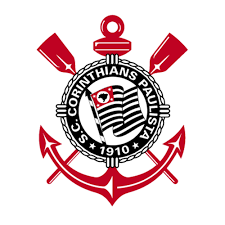
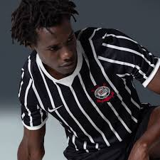
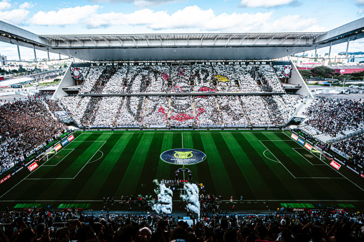

Fundado em 1º de setembro de 1910 por operários no bairro do Bom Retiro,
em São Paulo, o Sport Club Corinthians Paulista nasceu com o propósito
de ser o "time do povo".
Inspirado no Corinthian Football Club de Londres, o clube se tornou uma
potência brasileira, colecionando títulos estaduais, nacionais e
internacionais, com destaque para a torcida "Fiel" e a "Democracia
Corinthiana"


